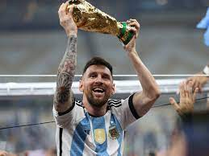
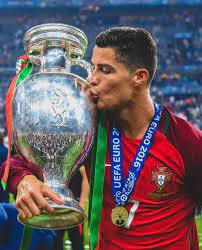

Cristiano Ronaldo is a professional footballer born on February 5, 1985, in Funchal, Madeira, Portugal.On the other hand Lionel Andrés Messi born, also known as Leo/Lionel Messi was born on 24 June 1987 in Rosario, Santa Fe.
Ronaldo has played for several top football clubs, including Sporting Lisbon, Manchester United, Real Madrid, and Juventus before moving to the Saudi professional league in Saudi Arabia where he currently plays.Lionel Messi too has played for top clubs but not as many as CR7 e.g Barcelona,Paris Saint Germain, and now Inter Miami fc .Both have won multiple league titles and UEFA Champions League trophies during their time with these clubs the difference being only in the number of times they have won them and with which club.
Despite both being the captains of their national teams.Messi is the only one of the two to have lifted the world cup trophy as he won the tournament at the end of the year 2022 ,before prevoiusly winning the Copa America Ronaldo is a key player for the Portugal national team despite him not featuring as much as him and other would have wished in the 2022 Qatar FIFA World Cup.He captained his country to a win in the final of the 2016 EUROS Final.
 Known for many of his iconic celebrations, Ronaldo's SIUU! celebration being the most popular one and many more others.
Watch hereMessi still hold the record for the most BallonD'ors in his name(8) despite controversy in his 2021 win hmm Ronaldo has broken many record in world football that still have not been broken upto date i.e Having scored the most championsleague goals which his tally is 134 goals.
For more clarification on who is better Watch this video